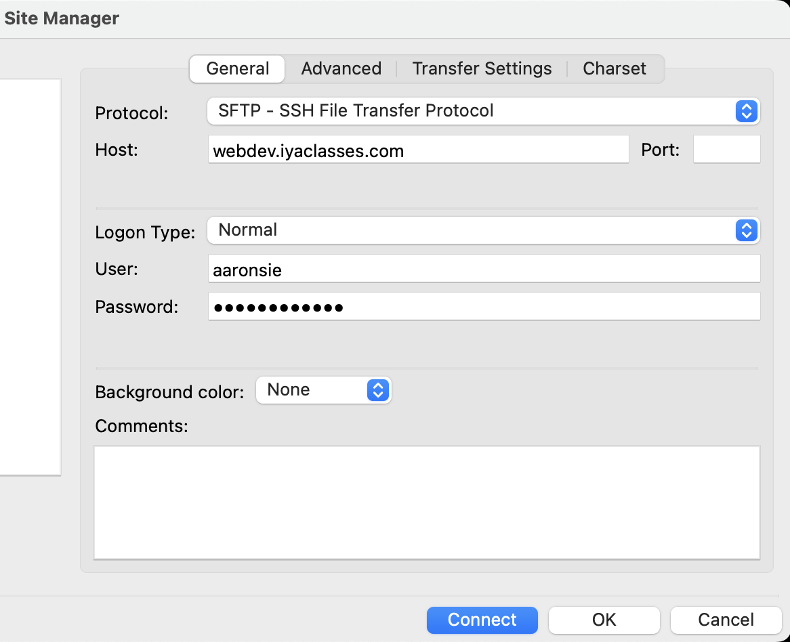
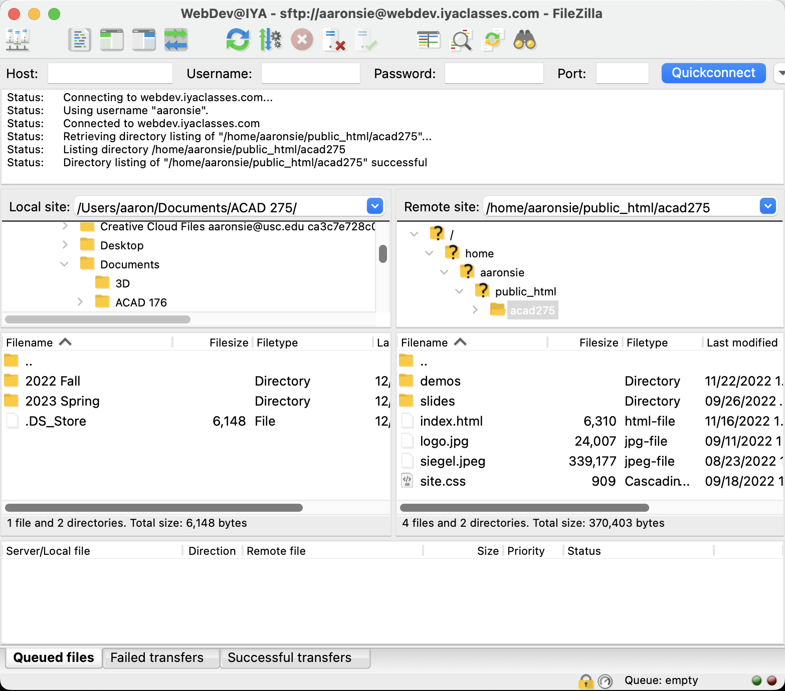

Week 1: Demo
Using File Transfer Protocol
File Transfer Protocol (FTP) is one of the earliest higher level protocols that works over Transfer Control Protocol (TCP) / Internet Protocol (IP). It was specifically created to transfer files between a client (your laptop) and the server (which is hosting your website). It's very easy to create new folders and upload content to the server. We can transfer any type of file (html, css, javascript, images, videos, audio, etc).
Getting Setup
- Visit FileZilla's website and click the "Download FileZilla Client" button (not the server one). On the next page it should autodetect your operating system, so click the green "Download FileZilla Client" button.
- When the file is downloaded, go ahead and install it on your computer.
- Run the FileZilla Client application and when it opens click the top right icon in order to open the "Site Manager". You will need to enter the following information into the input fields provided:
- Protocol: SFTP - SSH File Transfer Protocol
- Host: webdev.iyaclasses.com
- Port: leave it blank.
- Logon type: Normal
- User: your USC username (e.g. the start of your email address before the @ symbol).
- Password: AcadDev_Lastname_USCIDNUMBER (e.g. for me it would be "AcadDev_Siegel_0123456789").
- Hit the "Connect" button. If all goes well, you should see a list of directories show up on the right side of the application window. If it doesn't work, you will see a red error in the top section of the application.

Using the FTP Client
The fundamentals of the FTP client are pretty basic. The application is broken down into four distinct areas:
- Top: Status Area shows the client/server communications and any errors that might occur.
- Left: Your local computer's file system. This allows you to navigate your hard drive for files you want to upload.
- Right: The remote server's file system. This allows you to navigate to a location where you want to upload files.
- Bottom: Upload/Download Queue reveals the current status of file transfers.

Uploading Files to the Server
- Use the right side to navigate to the location on the server where you would like to upload your file (this should be somewhere inside public_html so that it can be accessed via the web).
- Use the left side to navigate to the location on your hard drive where your file is currently saved.
- Double click the appropriate file on the left side, and it will be automatically added to the queue and the transfer will begin.
- If the upload is successful, you should see the right side update with the new file in it. If you attempt to upload a file that already has a file with the same name in that location, the application will prompt you if you would like to overwrite it or not.